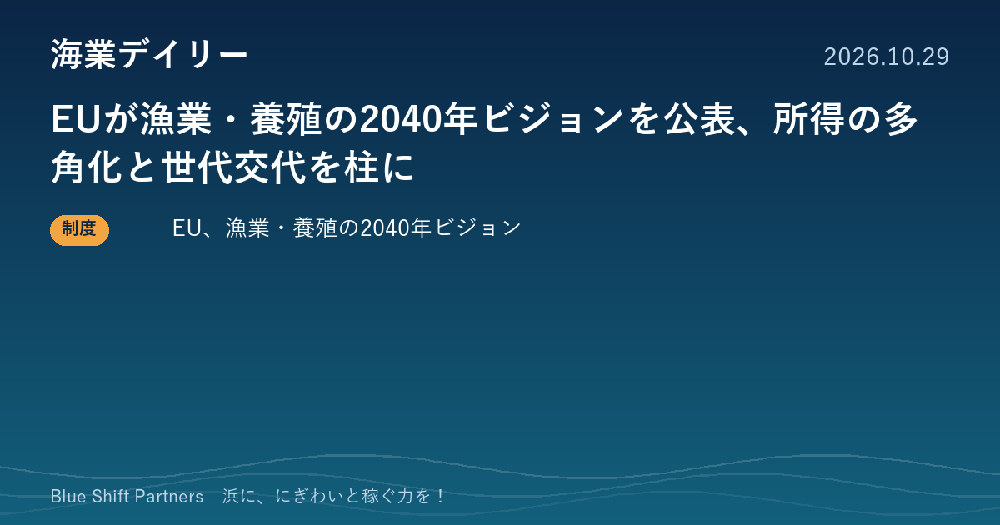

2026.10.29
EUが漁業・養殖の2040年ビジョンを公表、所得の多角化と世代交代を柱に

本日は海外の制度の動きを1件お届けします。欧州委員会が、漁業・養殖業の2040年に向けた長期ビジョンを公表しました。エネルギー転換、トレーサビリティのデジタル化、小規模漁業の支援など、日本の浜にも通じる論点が並んでいます。
欧州委員会、漁業・養殖業の「2040年ビジョン」を公表
欧州委員会は2026年10月20日、漁業・養殖業の2040年に向けた長期ビジョンを公表しました。2030年までの省エネ・資源効率化とその後のゼロエミッション技術の普及、EU産水産物の安定供給と消費者の選択の後押し（2029年までに全製品のデジタルトレーサビリティを推進）、資金調達の改善と小規模漁業の支援、違法漁業対策などの国際協調を柱にしています。漁船やイノベーション、所得の多角化への投資を支え、2027年には担い手の世代交代を促す戦略も始める予定です。
ここがポイント：所得の多角化、小規模漁業の支援、トレーサビリティのデジタル化など、日本の海業や水産DXと重なる論点が多く、施策や計画づくりの参考になります。担い手不足に悩む浜にとっては、世代交代の戦略の中身が今後の注目点です。
出典：欧州委員会（EU）ニュース「Long-term vision for a successful fisheries and aquaculture sector」（2026-10-20）
EUは「魚を獲る・育てる」だけでなく、所得の多角化や消費者に選ばれる仕組みまでを一つのビジョンにまとめました。日本の海業も、漁港を拠点に観光・飲食・体験で稼ぐ道を広げる取り組みです。海外の制度設計は、浜の計画づくりで論点を漏らさないためのチェックリストとして使えます。